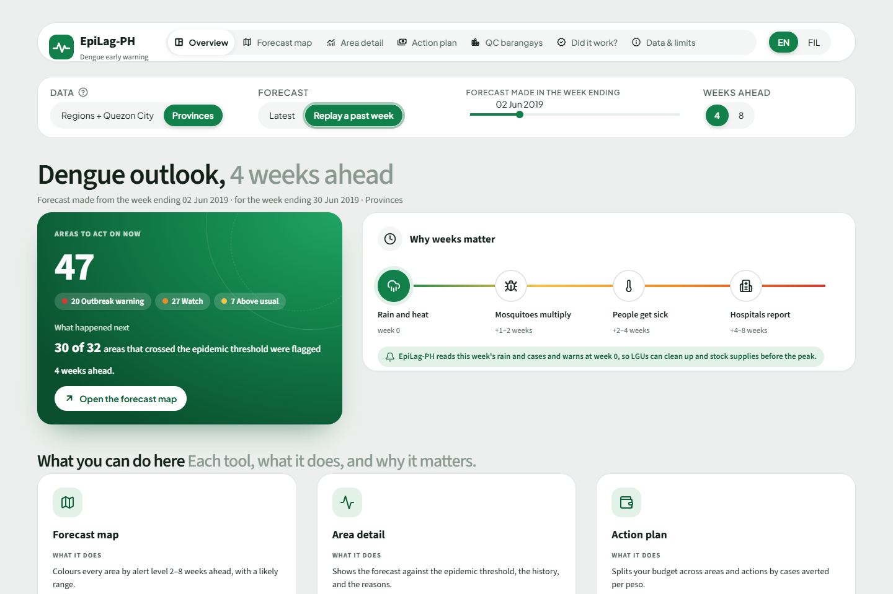
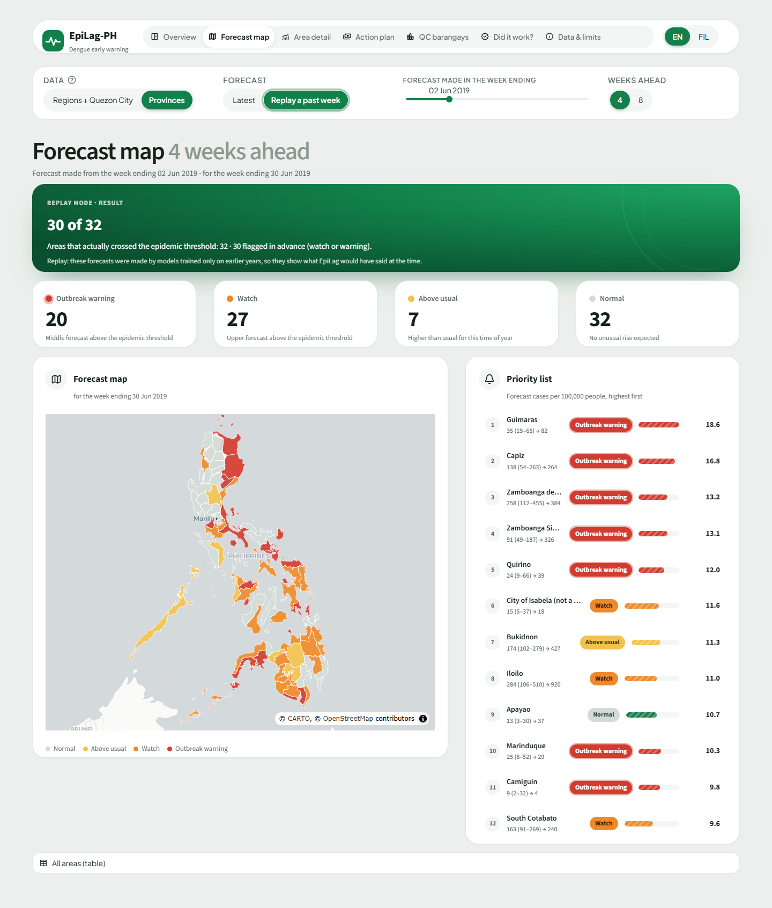
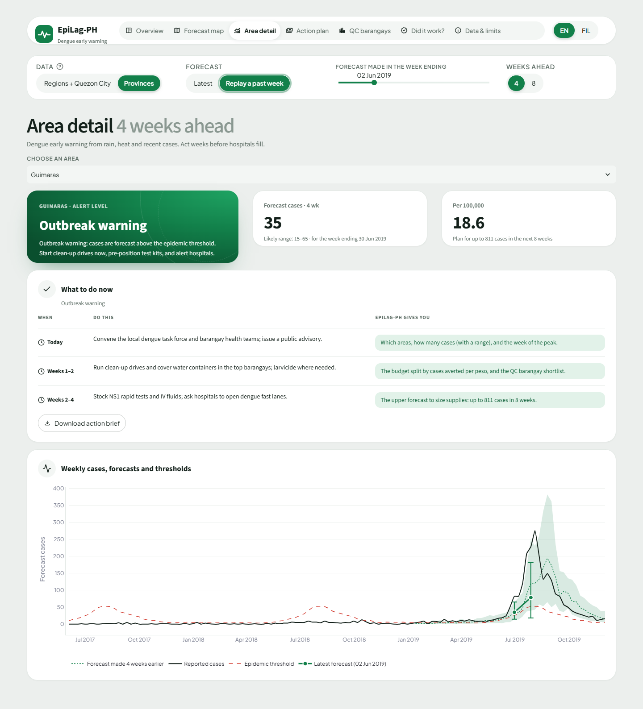
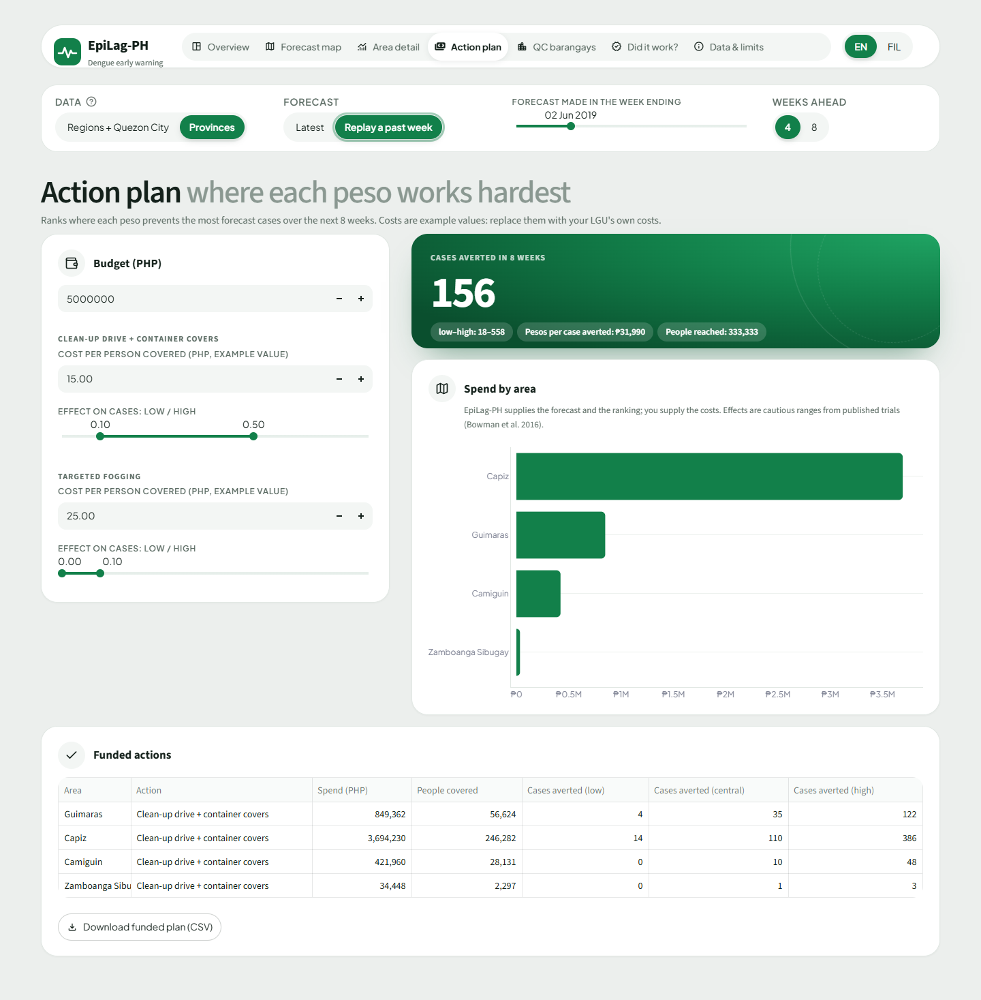
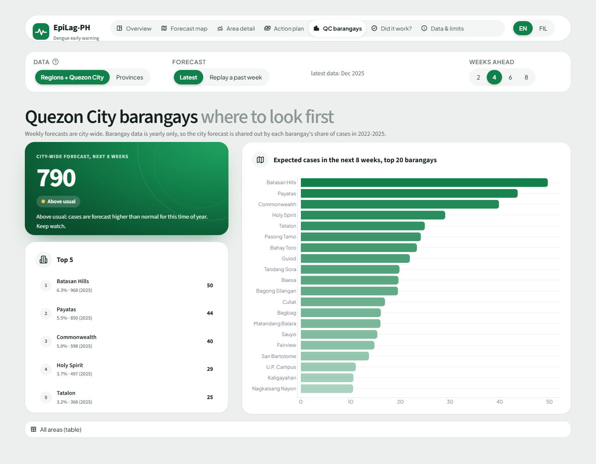

Reports arrive after the outbreak has begun.





test sets where it beat both simple rules, 4 weeks ahead
of outbreak starts caught 4 weeks ahead
of real values inside the likely range (target 80%)